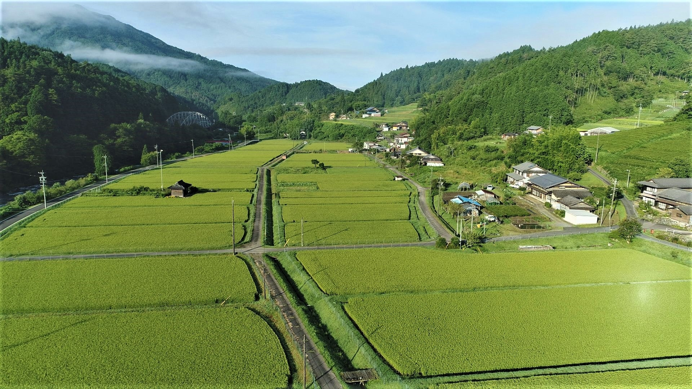

生産している雑穀
our products
あわ
堆肥散布、土壌改良資材散布
人の体内ではエネルギーを作り出すのと同時に活性酸素が生じます。活性酸素は細胞を傷つけ、老化や生活習慣病の原因となります。雑穀には酸化を抑える抗酸化物質であるビタミン類やポリフェノールなどが含まれています。

ひえ
耕起、砕土、整地
人の体内ではエネルギーを作り出すのと同時に活性酸素が生じます。活性酸素は細胞を傷つけ、老化や生活習慣病の原因となります。雑穀には酸化を抑える抗酸化物質であるビタミン類やポリフェノールなどが含まれています。
いなきび
基肥散布
人の体内ではエネルギーを作り出すのと同時に活性酸素が生じます。活性酸素は細胞を傷つけ、老化や生活習慣病の原因となります。雑穀には酸化を抑える抗酸化物質であるビタミン類やポリフェノールなどが含まれています。
たかきび
播種
人の体内ではエネルギーを作り出すのと同時に活性酸素が生じます。活性酸素は細胞を傷つけ、老化や生活習慣病の原因となります。雑穀には酸化を抑える抗酸化物質であるビタミン類やポリフェノールなどが含まれています。
アマランサス
間引き、中耕、培土
人の体内ではエネルギーを作り出すのと同時に活性酸素が生じます。活性酸素は細胞を傷つけ、老化や生活習慣病の原因となります。雑穀には酸化を抑える抗酸化物質であるビタミン類やポリフェノールなどが含まれています。
古代米
防鳥対策
人の体内ではエネルギーを作り出すのと同時に活性酸素が生じます。活性酸素は細胞を傷つけ、老化や生活習慣病の原因となります。雑穀には酸化を抑える抗酸化物質であるビタミン類やポリフェノールなどが含まれています。
もちあわ
収穫、乾燥
人の体内ではエネルギーを作り出すのと同時に活性酸素が生じます。活性酸素は細胞を傷つけ、老化や生活習慣病の原因となります。雑穀には酸化を抑える抗酸化物質であるビタミン類やポリフェノールなどが含まれています。